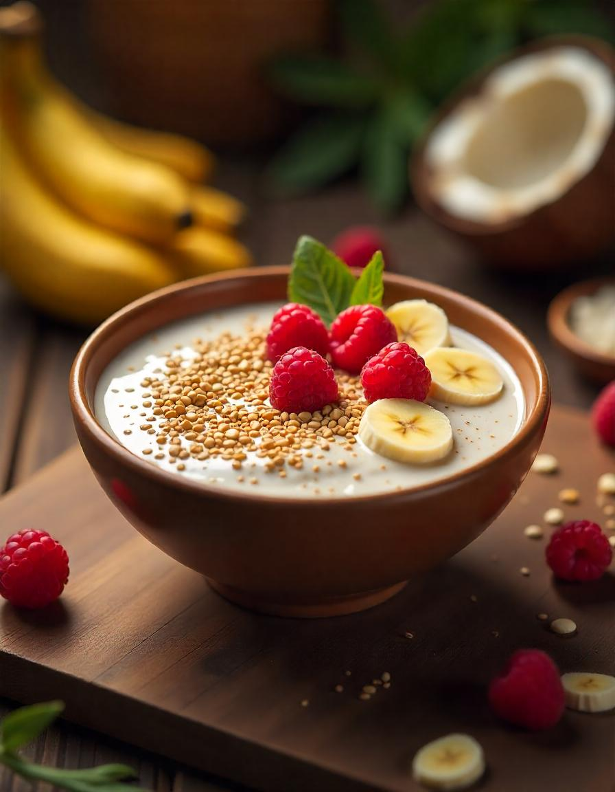

Remedios de la abuela
Refuerza tu sistema inmunológico
Ingredientes:
Instrucciones:
- Pela y corta 2 cm de jengibre fresco en rodajas finas.
- Calienta 500 ml de agua en una olla.
- Agrega el jengibre y una cucharadita de cúrcuma en polvo.
- Hierve a fuego lento durante 10 minutos.
- Cuela la mezcla y sirve en una taza.
¡Listo!

Mejora tu salud digestiva
Ingredientes:
- Semillas de chía
- Leche vegetal
- Frutas
Instrucciones:
- Mezcla 2 cucharadas de semillas de chía con 200 ml de leche vegetal
- Revuelve bien para evitar que las semillas se apelmacen.
- Deja reposar en el refrigerador durante 2 horas.
- Antes de consumir, mezcla de nuevo y añade frutas frescas
¡Lo mejor para ti!
Fortalece tus huesos
Ingredientes:
- 2 tazas de espinacas frescas
- 1/4 taza de almendras
- 1/4 taza de queso feta
- 1/2 manzana en rodajas finas
- 2 cucharadas de vinagreta
Instrucciones:
- Lava y seca bien las espinacas frescas.
- Añade las rodajas de manzana.
- Añade el queso feta y las almendras
- Rocía con la vinagreta, mezcla bien y sirve.
¡Disfruta!
Infusión relajante
Ingredientes:
- 1 bolsita de té verde
- 1/2 cucharadita de flores secas de lavanda
- 1 taza de agua caliente
- Miel al gusto
Instrucciones:
- Calienta el agua, asegurándote de que no hierva completamente.
- En una taza, Coloca la bolsita de té verde y las flores de lavanda.
- Vierte el agua caliente y deja reposar durante 3-5 minutos.
- Endulza con miel si lo prefieres.
¡Paz para ti!